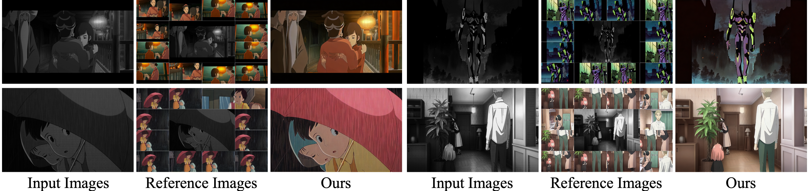

ColorFlow is the first model designed for fine-grained ID preservation in image sequence colorization, utilizing contextual
information. Given a reference image pool, ColorFlow accurately generates colors for various elements in black and white image sequences,
including the hair color and attire of characters, ensuring color consistency with the reference images.
Abstract
Automatic black-and-white image sequence colorization while preserving character and object identity (ID) is a complex task with significant market demand, such as in cartoon or comic series colorization. Despite advancements in visual colorization using large-scale generative models like diffusion models, challenges with controllability and identity consistency persist, making current solutions unsuitable for industrial application. To address this, we propose ColorFlow, a three-stage diffusion-based framework tailored for image sequence colorization in industrial applications. Unlike existing methods that require per-ID finetuning or explicit ID embedding extraction, we propose a novel robust and generalizable Retrieval Augmented Colorization pipeline for colorizing images with relevant color references. Our pipeline also features a dual-branch design: one branch for color identity extraction and the other for colorization, leveraging the strengths of diffusion models. We utilize the self-attention mechanism in diffusion models for strong in-context learning and color identity matching. To evaluate our model, we introduce ColorFlow-Bench, a comprehensive benchmark for reference-based colorization. Results show that ColorFlow outperforms existing models across multiple metrics, setting a new standard in sequential image colorization and potentially benefiting the art industry.
Method
The overview of ColorFlow. This figure presents the three primary components of our framework: the Retrieval-Augmented
Pipeline (RAP), the In-context Colorization Pipeline (ICP), and the Guided Super-Resolution Pipeline (GSRP) . Each component is essential
for maintaining the color identity of instances across black-and-white image sequences while ensuring high-quality colorization.
Patch-Wise training strategy. This strategy is designed to reduce the computational demands of training on high-resolution stitched images.
The left box displays segmented stitched images from the training phase, with the corresponding masks also segmented accordingly. The
right box presents the complete stitched image and masks for the inference phase.
Compare ColorFlow with Previous Works
Comparison of our method with SOTA approaches in the manga colorization. Our method exhibits superior aesthetic quality,
producing colors that more closely match the original image.
Comparison of ColorFlow with other approaches in the animation storyboard colorization. Our method exhibits superior
aesthetic quality, producing colors that more closely match the original image.
Qualitative Results
Quantitative comparisons with state-of-the-art models for Reference Image-based Colorization. We compare two models without reference image input: Manga Colorization V2 (MC-v2) and AnimeColorDeOldify (ACDO), alongside two reference image-based colorization models: Example Based Manga Colorization (EBMC) and ScreenVAE. The best results are in bold.
More qualitative results are shown in the paper.
Various Artistic Contexts
A. Black-and-White Manga
B. Line Art
C. Real-World Photo
D. Cartoon Storyboard

BibTex
@misc{zhuang2023task,
title={A Task is Worth One Word: Learning with Task Prompts for High-Quality Versatile Image Inpainting},
author={Junhao Zhuang and Yanhong Zeng and Wenran Liu and Chun Yuan and Kai Chen},
year={2023},
eprint={2312.03594},
archivePrefix={arXiv},
primaryClass={cs.CV}
}
 Paper
Paper Code
Code YouTube
YouTube